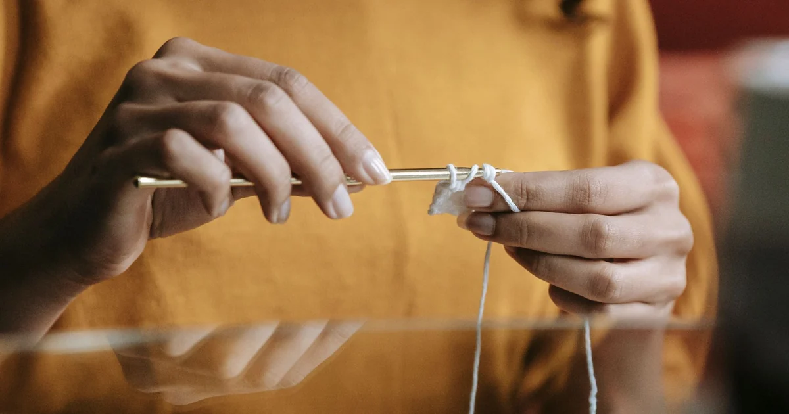
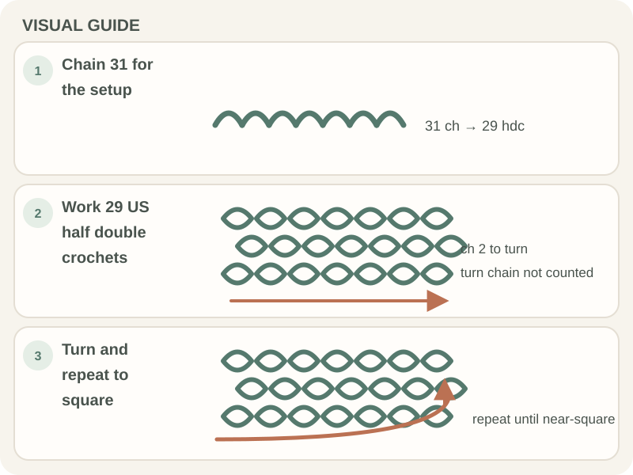

Beginner Projects · Beginner guide
Crochet Washcloth Practice: A 29-Stitch Half Double Crochet Sample
Work a US half-double-crochet washcloth sample with consistent rows and fabric suited to your yarn.

A washcloth benefits from an easy-care fabric. This sample specifies a stitch count per row, but no total row count, finished size, or tested care results.
Before you begin
Choose yarn by its label and intended care. These instructions use US hdc; the turning chain is not counted as a stitch in this sample.
Step-by-step instructions
- Chain 31. Work a US hdc into the third chain from the hook and each remaining chain: 29 stitches.
- Chain 2 and turn. Work one hdc in each stitch, keeping 29 across.
- Repeat until the fabric is close to square, measuring it relaxed. The chain-2 turning chain is not counted here.
- Fasten off and weave in ends. Follow the yarn label’s care directions before washing or gifting.

What to check
Keep the turning chain separate
The first row has 29 stitches because two chains are skipped. If your pattern uses another turning-chain rule, its count may differ.
Frequently asked questions
Does chain 2 count as a stitch here?
No. These sample instructions say not to count it. Other patterns may use another rule.
How do I choose the size?
Measure as it grows and stop when it suits your use; no fixed row total is given.
How does this sample differ from the single-crochet cloth?
This version uses US half double crochet and starts in the third chain, giving 29 stitches from a 31-chain foundation. The companion single-crochet sample starts in the second chain and has 30 stitches. Their row heights and fabric are different, so do not swap counts without checking the pattern.
Check the 29-stitch count after turning
The sample starts with 31 chains, skips two chains, and works one US half double crochet into each of the remaining 29. It then chains two and turns without counting that chain as a stitch. Keep 29 stitch tops in each later row. If the side widens or narrows, check the first stitch beside the turning chain and the last stitch before adding or removing anything.
Consider what the half double crochet changes
US half double crochet creates a taller row than US single crochet, which can change how quickly the cloth reaches its height. Yarn, hook, and tension also affect the finished dimensions. The sample only says to work until the cloth is close to square; it gives no fixed width, row count, or tested care result. If exact dimensions matter, use a pattern with a stated gauge and measure the fabric as it grows.
Use the yarn label for care
This project is meant to be used as a washcloth, so check that the yarn’s care directions suit how you intend to wash it. Fiber and construction influence the fabric, but the label belongs to the specific yarn you chose. The sample does not establish that every fiber or stitch will behave the same way. Keep the band with the finished cloth or take a photo so the washing instructions remain available.
Check row height as well as stitch count
A half double crochet creates a taller row than single crochet, so the cloth’s height can grow quickly relative to its width. The sample asks you to stop when the relaxed fabric is close to square rather than follow a fixed row count. Measure width and height on a flat surface as you work. If exact dimensions matter, use a pattern that gives gauge or finished measurements. Keep the 29-stitch row count consistent, but do not assume that the same number of rows will produce the same size in every yarn.
Common mistakes and how to fix them
- Working the turning chain as a stitch in this sample. That changes the stated count. Follow the row rule in the instructions you are using.
- Pulling up the half-double loops too tightly. It can make the taller stitch hard to finish. Keep loop height consistent with neighboring stitches.
- Expecting a fixed size from the row count. No dimensions are specified. Measure the relaxed fabric and follow the pattern if exact size matters.
Tips that make it easier
- Mark an edge stitch until the turning-chain rule feels familiar.
- Compare the cloth’s width and height on a flat surface every few rows.
- Save the yarn label so care instructions are easy to find.
Check the washcloth dimensions
Measure the rectangle flat at intervals and compare its width and height with the pattern. Stop if the shape changes so you can check edge stitches before more rows are added.
When the rectangle reaches the pattern’s stated size, compare its sides before fastening off. If the width is correct but the height is short, continue only if the pattern allows you to add rows. Keep the final edge consistent with the starting edge so the cloth lies flatter after finishing.